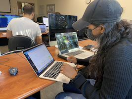
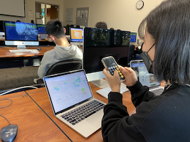

Pratibha expressed that there was a perfect amount of pressure from the game to answer the questions with the given time. Although she was able to answer quickly, she suggested that extending the timer to 15 seconds. Moreover, she didn't have enough time to observe the layout and only focused on answering questions. She suggested adding a countdown before the timer starts, so that the users can scan the screen before playing.

Mahima pausing to calculate
Mahima found the bubbles engaging and the layout easy to understand. She stated that the timer was not enough, and also suggested extending the timer to 15 seconds. Moreover, she didn't notice the star inidicating the current player, and suggested using colors to make it more obvious.

Sally using a calculator to solve
Sally's first impressions of the website was that it has a cute interface. She also found the timer too short and said she couldn't focus on anything else. When the players switch, or a new question pops up, she suggested having a longer delay between each transition. Sally also suggested using colors for the cards to indicate the current player.
Changes I will implement: Adding more time to the countdown was among all of the users, so I will extend it to 15 seconds. I am also considering removing the star emoji and changing the color of the cards to show who is currently player. Moreover, I will implement a new feature to reset a user's score if they get 3 questions wrong.